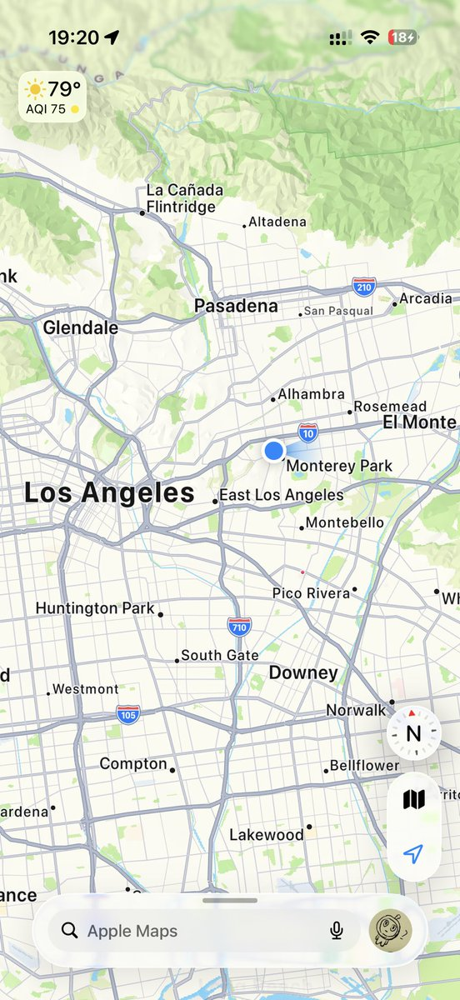
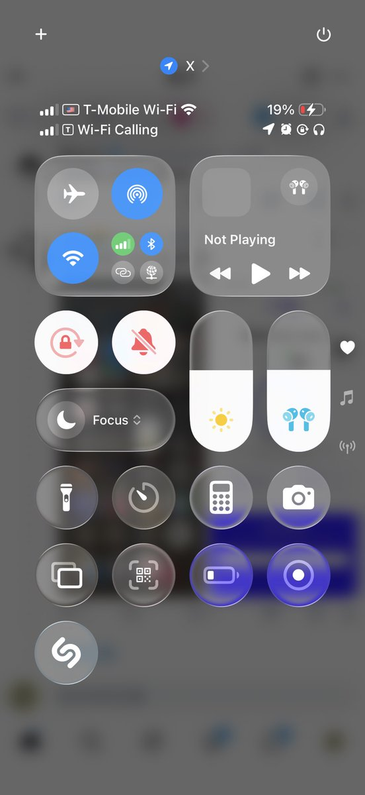
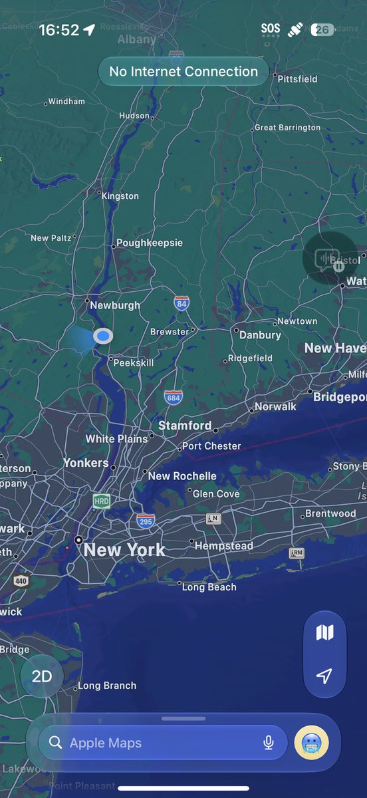
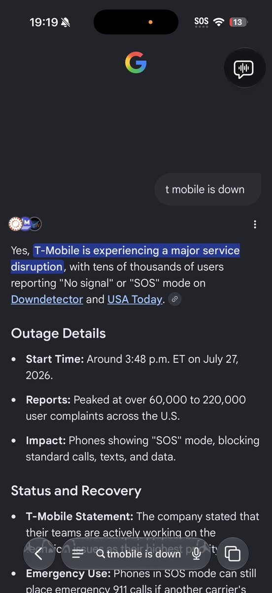
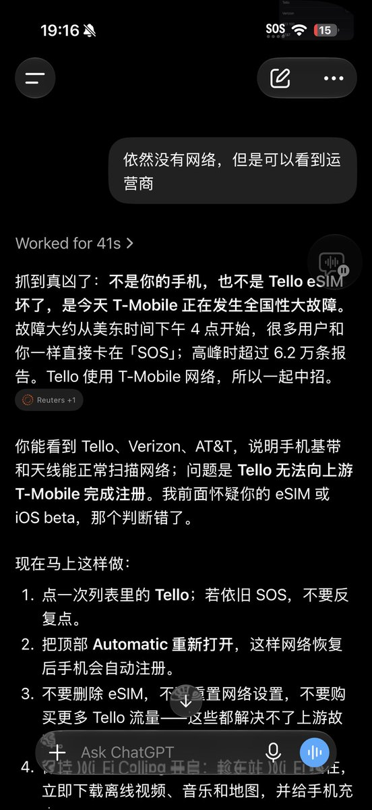

许白
@xubai_01
今天有其他朋友和@ColdBerry223 都在和我吐槽是不是Tello小品牌不靠谱一直没信号..
我早上起床那时候就不太对了，因为那个时候我T-Mobile也没信号😨我第一反应就是蒙市这条路修修又挖挖，还没建好吗？基站又断网？
结果发现是全部断了。我服了。





LLLL🏳️🌈
@is_llll
T-mobile这是在全美都宕机了吗…太他妈的离谱了…一个运营商居然可以出这么大的故障…全国无服务… https://t.co/lYojzq5hmE